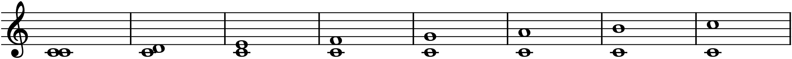
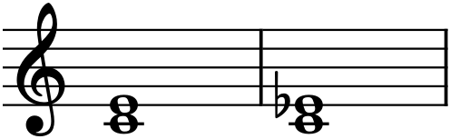
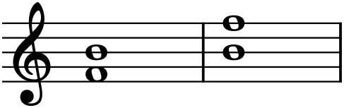
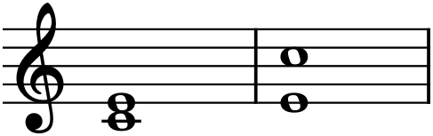

So far every chapter has been about single notes and the collections they belong to — a staff of pitches, a scale, a key. But music is made of relationships between notes, and the most basic relationship is the interval: the distance between two pitches. An interval is the atom of harmony — stack a few and you have a chord — and the sinew of melody — a tune is nothing but a chain of intervals, one note reaching to the next. Learn to name intervals precisely and hear them, and a great deal of what was mysterious about chords and melodies becomes simple arithmetic you can do by eye and ear.
9.1Melodic and harmonic intervals
Two notes can be sounded one after the other or both at once. When they follow in succession — the steps and leaps of a melody — the interval between them is melodic. When they sound together — two voices, or two notes of a chord — it is harmonic. The distance is measured identically either way; only the presentation differs. This chapter draws its intervals harmonically, as stacked pairs, because the vertical picture makes the size easiest to see, but everything here applies equally to the horizontal leaps of a tune.
9.2The number of an interval
Naming an interval takes two pieces of information: a number and a quality. The number comes first, and it is just counting — count the letter names (equivalently, the staff positions) from the lower note to the upper, including both ends. C up to E is a third: C-D-E, three letters. C up to G is a fifth: C-D-E-F-G. This inclusive counting is the one thing beginners trip on — C to D is a second, not a first, because you count both the C and the D.

The eight sizes in Figure 9.1 — unison through octave — are the whole vocabulary within one octave. Intervals wider than an octave (a tenth, a twelfth) are called compound, and are usually understood as their simple version plus an octave: a tenth is “an octave plus a third,” and behaves harmonically much like a third. The unison (0 distance) and the octave (the same letter, eight steps up) are the two intervals whose two notes sound most nearly like one pitch, as you first heard in Chapter 5.
9.3The quality of an interval
The number alone is not enough, because a third from C can be C–E or C–E♭ — both are “thirds” by letter-count, yet they sound distinctly different, one bright, one shadowed. The difference is quality, and it is what makes intervals expressive rather than merely large or small.
Intervals fall into two families for the purpose of quality, and this split is the one genuinely arbitrary-seeming fact you must simply learn:
- Perfect intervals: the unison, fourth, fifth, and octave. These are the acoustically purest intervals — historically the first consonances — and they come in one plain form called perfect (abbreviated P).
- Major/minor intervals: the second, third, sixth, and seventh. These come in two everyday sizes, a larger major (M) and a minor (m) one half step smaller.
So there is a perfect fifth but no “major fifth”; there is a major third and a minor third but no “perfect third.” Why these four and not others is a question with a long acoustic answer; for now, memorize the perfect group — 1, 4, 5, 8 — and everything else is major or minor.
9.4Measuring in half steps
Number-plus-quality is the name; the half step is the precise measure that pins it down, exactly as in Chapter 7. Count the semitones between the two notes and every interval has a unique size:
| Interval | Half steps | Example from C |
|---|---|---|
| Perfect unison (P1) | 0 | C–C |
| Minor 2nd (m2) | 1 | C–D♭ |
| Major 2nd (M2) | 2 | C–D |
| Minor 3rd (m3) | 3 | C–E♭ |
| Major 3rd (M3) | 4 | C–E |
| Perfect 4th (P4) | 5 | C–F |
| Tritone (A4 / d5) | 6 | C–F♯ / C–G♭ |
| Perfect 5th (P5) | 7 | C–G |
| Minor 6th (m6) | 8 | C–A♭ |
| Major 6th (M6) | 9 | C–A |
| Minor 7th (m7) | 10 | C–B♭ |
| Major 7th (M7) | 11 | C–B |
| Perfect octave (P8) | 12 | C–C |
A major interval made one half step smaller becomes minor; the reverse makes it major again. Here is a third of each quality:

Two more qualities appear at the edges. Widen a perfect or major interval by an extra half step and it becomes augmented (A); shrink a perfect or minor interval by a half step and it becomes diminished (d). Most of the time you will not need them — but one augmented/diminished pair is unavoidable, because it sits right in the middle of the octave.
9.5Consonance and dissonance
Intervals differ not just in size but in stability — whether they sound settled and restful (consonant) or tense and wanting to resolve (dissonant). Roughly: the unison, octave, fifth, thirds, and sixths are consonant, the restful intervals harmony leans on; seconds and sevenths are dissonant, the spicy intervals that create motion and must be handled with care. (The perfect fourth is the famous fence-sitter — consonant in some contexts, dissonant in others — a subtlety Part 2 will revisit.)
At the very centre of the octave sits the sharpest dissonance of all, six half steps wide: the tritone, so called because it spans three whole tones. It is both an augmented fourth and a diminished fifth, depending on spelling, and it is the same six semitones either way.

Consonance and dissonance are not good and bad; they are tension and release, and music needs both. A piece of nothing but consonance is inert; the dissonances in Figure 9.3 and among the sevenths are what create the forward pull that consonance then satisfies.
9.6Inversion
Flip an interval — move the lower note up an octave so it becomes the upper, or the upper note down — and you get its inversion. A third inverts to a sixth; a fifth to a fourth; a second to a seventh.

Two tidy rules govern inversion, and they are worth knowing because they halve how much you must memorize. First, the numbers always add up to nine: 3 inverts to 6 (3 + 6 = 9), 2 to 7, 4 to 5, unison to octave. Second, the quality flips: major becomes minor and minor becomes major, augmented becomes diminished and diminished augmented — while perfect stays perfect. So a major third (C–E) inverts to a minor sixth (E–C), as in Figure 9.4; a perfect fifth inverts to a perfect fourth. Learn the intervals up to the fifth and inversion gives you the rest for free.
9.7Why intervals matter
Intervals are the level at which music actually operates. In Part 2 you will stack thirds to build every chord in a key — a triad is just two thirds piled up, and its quality (major, minor, diminished) is decided entirely by which thirds. In Part 3 you will shape melodies by their intervals — a tune that moves mostly by step feels smooth, one built on leaps feels bold, and knowing the difference is knowing how to write either on purpose. And training your ear to recognize intervals — to hear a leap and know it is a perfect fifth — is the single most valuable ear skill a composer can build, because it turns the music in your head into notes you can write down. Everything from here up is built on this one atom.
In MuseScore
MuseScore will build intervals for you, above a note you have entered — which is the fastest way to hear how a quality sounds.
- In note-input mode, enter the lower note. Then press Alt+ a number to add a note that interval above it: Alt+3 stacks a third, Alt+5 a fifth, Alt+8 an octave. The two notes form a harmonic interval — a two-note chord — that you can play with Space.
- The same commands live under Add ▸ Intervals if you prefer the menu, and they work on an already-entered note: select it, then Alt+ the number.
- MuseScore adds the interval diatonically — it uses the note that belongs to the current key — so Alt+3 above C in C major gives the major third E, while above D it gives the minor third F. To change a note’s quality afterward, adjust it a half step with ↑/↓ (§7’s box).
- To identify an interval already on the page, click each note in turn and read its pitch from the status bar (§1.3); the two pitch names give you the interval.
Try it: enter a C, press Alt+3, and play the major third. Then click the upper E and press ↓ once to flatten it to E♭ — the third turns minor, and you can hear the colour darken from the bright interval of §9.4 to the shadowed one. Finally add a G on top (Alt+3 above the E♭) and you have accidentally built your first chord — a C-minor triad, the subject of the very next chapter.